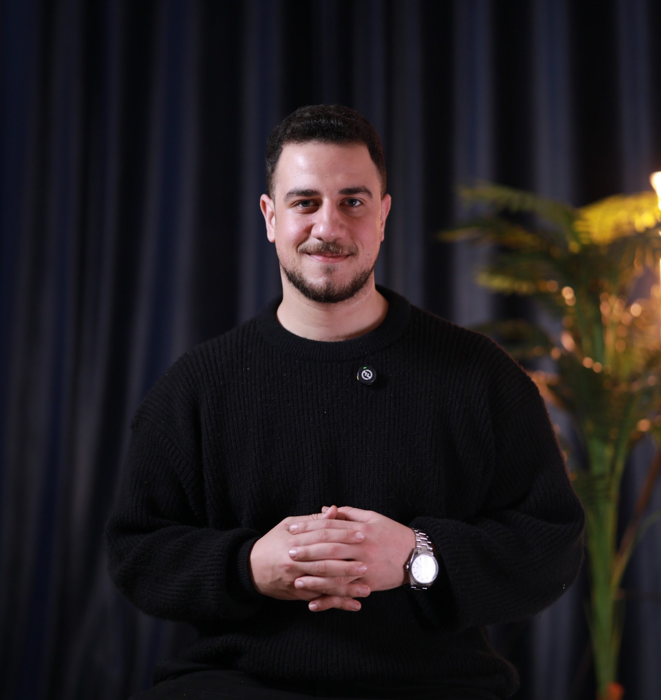

GENERATIVE AI01 / 04
AI Multi-Agent Product
Integration Hub
A production-oriented LLM system built around structured tool orchestration, persistent storage, and fault-tolerant processing.
HELLO, I’M AHMED ABDELRAZEK
AI Engineer turning complex ideas into reliable systems. I build enterprise AI, multi-agent applications, and machine learning that moves from research to the real world.

EXPERIENCE ACROSS
I connect the depth of machine learning with the discipline of software engineering.
I’m an AI Engineer based in Alexandria, Egypt, specializing in enterprise AI systems, Generative AI, and production-ready machine learning workflows. My work spans LLM-powered applications, retrieval-augmented generation, and AI digital twins in multi-tenant SaaS environments.
At Performance Leap, I contributed to enterprise digital twins for intelligent meeting optimization, personalization, and AI assistant integrations. Across engineering, freelance work, and teaching, I focus on making complex technology reliable, scalable, and useful.
I bring hands-on experience with Python, PyTorch, TensorFlow, FastAPI, and Docker, alongside exposure to AWS and Azure ML workflows. I also enjoy helping students turn technical ideas into hands-on projects.
Four projects across intelligent agents, language, and vision.
Showing all four projects.
A production-oriented LLM system built around structured tool orchestration, persistent storage, and fault-tolerant processing.
A context-aware university assistant using document embeddings, semantic search, and role-based access to relevant information.
A SqueezeFormer-based gesture recognition pipeline trained on 200GB+ of data, with 89% validation similarity and low-latency inference.
A CNN-based pneumonia image classifier developed with data augmentation and hyperparameter tuning.
Enterprise AI, generative models, backend development, and technical education.
Get the full CVA practical toolkit for building complete AI systems.
LLMs · RAG · Prompt Engineering · Embeddings · LangChain · LangGraph
PyTorch · TensorFlow · NLP · Computer Vision · Statistical Modeling
Python · SQL · TypeScript · JavaScript
Docker · CI/CD · FastAPI · REST APIs · Model Serving · Experiment Tracking
PostgreSQL · Redis · Git · OpenTelemetry
AWS & Azure ML workflow exposure · Cloud Infrastructure Concepts
Award-winning work, backed by continued technical learning.
First place among 430+ AI projects for an innovative artificial intelligence solution.
Ministry of Communications and Information TechnologyRanked first for best-performing AI project across the Microsoft Machine Learning Engineer track.
Digital Egypt Pioneers InitiativeDigital Egypt Pioneers Initiative · 2025
ML engineering, NLP, deep learning, and production-ready AI systems.HCIA-AI v3.5 · Huawei · 2024
Enterprise AI platforms, deep learning, computer vision, and AI system design.National Telecommunication Institute (NTI) · 2024
Machine learning, NLP, data analysis, and big data fundamentals.Oracle · 2024
SQL, relational database design, and data querying for production systems.From Linear Models to Deep Learning: linear models, neural networks, CNNs, and deep learning optimization techniques.
Probability theory, Bayesian inference, and statistical reasoning for machine learning systems.
Comprehensive training in machine learning, NLP, deep learning, and production AI workflows.
Enterprise AI platforms, deep learning, and computer vision systems.
Cloud infrastructure and virtualization supporting scalable machine learning systems.
EDUCATION / 2021–2025
Egypt-Japan University of Science and Technology (E-JUST)
Have an AI challenge, an engineering opportunity, or a project in mind? I’d love to hear about it.
Start a conversation